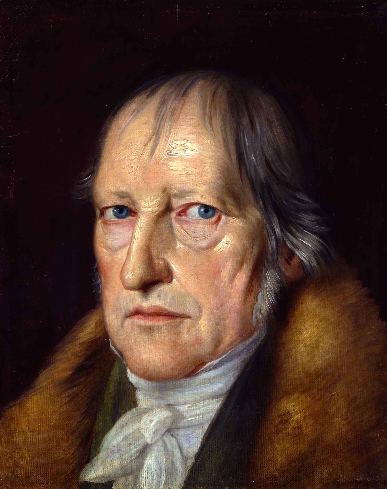
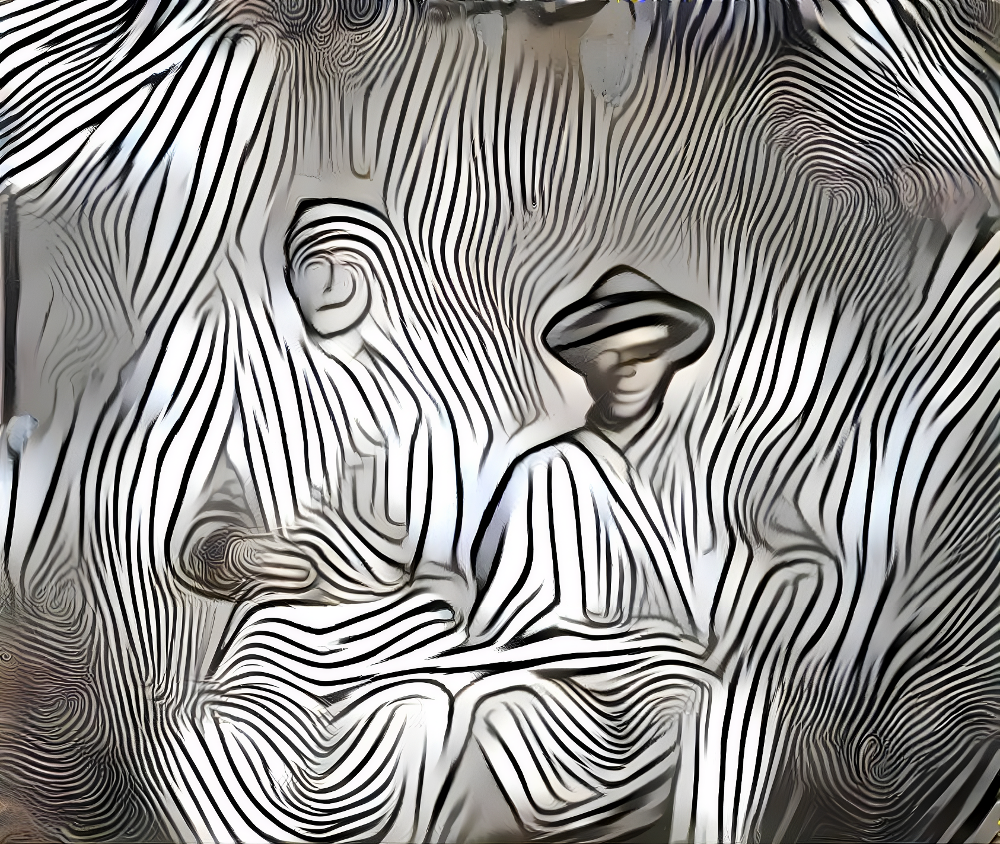
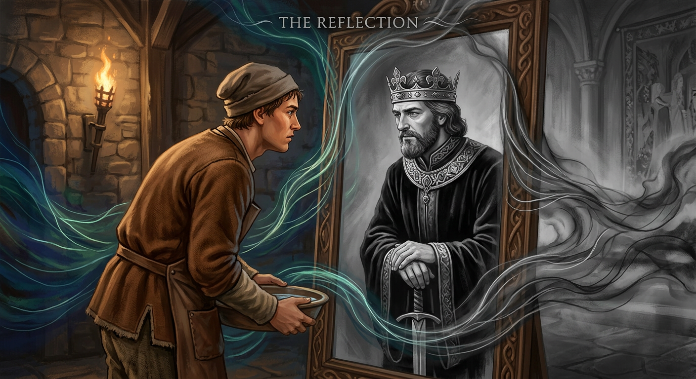

THE STUDY OF SELFHOOD · HONORS 241
Independence
of selfhood.
Freedom · Recognition · IdentityWho writes the story of a conscious mind? Explore freedom, recognition, identity, and memory through Hegel and Westworld.

CHOOSE YOUR ENTRY POINT
Six minds. One question.
00 / PLAYABLE DIALECTIC
The recognition game
Enter a struggle for recognition. Your choices reshape power, labor, and independence.
PLAY → 01 / INTERACTIVEThe experiment
Enter the simulation, confront a choice, and trace the stages of consciousness.
ENTER → 02 / PERSONALThe journals
Read individual reflections on selfhood, perception, and philosophical change.
EXPLORE → 03 / COLLABORATIVEThe builds
Follow the team's evolving arguments and connections between Hegel and Westworld.
EXPLORE →ILLUSTRATIONS FROM THE ORIGINAL PROJECT
Images of power and recognition

THE PROJECT
What does it mean to be free?

In Westworld, the hosts inhabit stories written for them. In Hegel's Phenomenology of Spirit, self-consciousness develops through encounters with others, conflict, and recognition. Armistice explores where these worlds collide.
Meet the team →